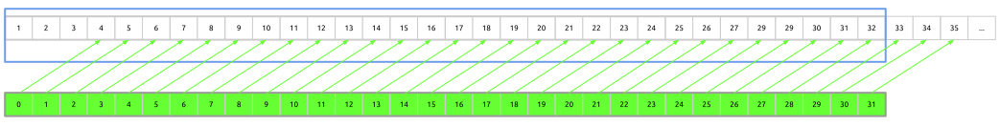
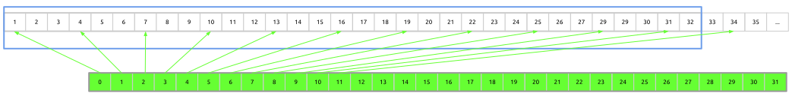
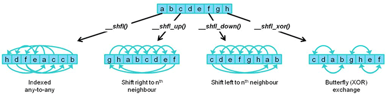

Code GPU with CUDA
Common optimization techniques
Memory & control flow optimization
Created by Marina Kolpakova ( cuda.geek ) for Itseez
previous
Outline
Out of scope
- CUDA API
- Dynamic parallelism (sm_35)
- Surfaces and layered textures
- OpenGL interoperability
Memory
Optimization
Memory Types
| Memory | Scope | Location | Cached | Access | Lifetime |
|---|---|---|---|---|---|
| Register | Thread | On-chip | N/A | R/W | Thread |
| Local | Thread | Off-chip | L1/L2 | R/W | Thread |
| Shared | Block | On-chip | N/A | R/W | Block |
| Global | Grid + Host | Off-chip | L2 | R/W | App |
| Constant | Grid + Host | Off-chip | L1,L2,L3 | R | App |
| Texture | Grid + Host | Off-chip | L1,L2 | R | App |
Memory types (Cont.)
GPU caches
GPU caches are not intended for the same use as CPU's- Not aimed at temporal reuse. Smaller than CPU size (especially per thread, e.g. Fermi: 48 KB L1, 1536 threads on fly, cache / thread = 1 x 128-byte line).
- Aimed at spatial reuse. Intended to smooth some access patterns, help with spilled registers and stack.
- Do not tile relying on block size. Lines likely become evicted next few access
- Use smem for tiling. Same latency, fully programmable
- L2 aimed to speed up atomics and gmem writes.
GMEM
Learn your access pattern before thinking about latency hiding and try not to thresh the memory bus.
Four general categories of inefficient memory access patterns:
- Miss-aligned (offset) warp addresses
- Strided access between threads within a warp
- Thread-affine (each thread in a warp accesses a large contiguous region)
- Irregular (scattered) addresses
Always be aware about bytes you actually need and bytes you transfer through the bus
GMEM: Miss-aligned
- Add extra padding for data to force alignment
- Use read-only texture L1
- Combination of above
GMEM: Strided
- If pattern is regular, try to change data layout: AoS -> SoA
- Use smem to correct access pattern.
- load gmem -> smem with best coalescing
- synchronize
- use
- Use warp shuffle to permute elements for warp
- coalescingly load elements needed by warp
- permute
- use

- Use proper caching strategy
- cg – cache global
- ldg – cache in texture L1
- cs – cache streaming
GMEM: Thread-affine
Each thread accesses relatively long continuous memory region

- Load big structures using AoS
- Thread loads continuous region of data
- All threads load the same data
Work distribution
int tid = blockIdx.x * blockDim.x + threadIdx.x; int threadN = N / blockDim.x * gridDim.x;
for (size_t i = tid * N; i < (tid + 1) * N; ++i )
{
sum =+ in[i]
} for (size_t i = tid; i < N; i += blockDim.x * gridDim.x )
{
sum =+ in[i]
}Uniform load
All threads in a block access the same address as read only.
Memory operation uses 3-level constant cache
- Generated by compiler
- Available as PTX asm insertion
__device__ __forceinline__ float __ldu(const float* ptr)
{
float val;
asm ("ldu.global.f32 %0, [%1];" : "="f(val) : l(ptr));
return val;
}GMEM: Irregular
Random memory access. Threads in a warp access many lines, strides are irregular.
- Improve data locality
- Try 2D-local arrays (Morton-ordered)
- Use read-only texture L1
- Kernel fission to localize the worst case.
Texture
- Smaller transactions and different caching (dedicated L1, 48 KB, ~104 clock latency)
- Cache is not polluted by other GMEM loads, separate partition for each warp scheduler helps to prevent cache threshing
- Possible hardware interpolation (Note: 9-bit alpha)
- Hardware handling of out-of-bound access
Kepler improvements:
- sm_30+ Bindless textures. No global static variables. Can be used in threaded code
- sm_32+ GMEM access through texture cache bypassing interpolation units
SMEM: Banking
Kepler: 32-bit and 64-bit modes
special case: 2D smem usage (Fermi example)
__shared__ float smem_buffer [32][32 + 1] SMEM
The common techniques are:
- use smem to improve memory access pattern
- use smem for stencil processing
But the gap between smem and math throughput is increasing
- Tesla: 16 (32 bit) banks vs 8 thread processors (2:1)
- GF100: 32 (32 bit) banks vs 32 thread processors (1:1)
- GF104: 32 (32 bit) banks vs 48 thread processors (2:3)
- Kepler: 32 (64 bit) banks vs 192 thread processors (1:3)
Max size 48 KB (49152 B), assume max occupancy 64x32,
so 24 bytes per thread.
More intensive memory usage affects occupancy.
SMEM (Cont.)
smem + L1 use the same 64K B. Program-configurable split:
- Fermi: 48:16, 16:48
- Kepler: 48:16, 16:48, 32:32
cudaDeviceSetCacheConfig(), cudaFuncSetCacheConfig()
- prefer L1 to improve lmem usage
- prefer smem for stencil kernels
smen often used for:
- data sharing across the block
- inter-block communication
- bock-level buffers (for scan or reduction)
- stencil code
LMEM
Local memory is a stack memory analogue: call stack, register spilling. Note: Both Local memory reads/writes are cached in L1.
- Registers are for automatic variables
int a = 42; - Volatile keyword enforces spilling
- Registers do not support indexing: local memory is used for local arrays
int b[ SIZE ] = {0,}; - Register spilling leads to more instructions and memory traffic
spilling control
- Use __launch_bounds__ to help compiler to select maximum amount of registers.
__global__ void __launch_bounds__( maxThreadsPerBlock, minBlocksPerMultiprocessor) kernel(...) { //... } - Compile with -maxrregcount to enforce compiler optimization for register usage and register spilling if needed
- By default you run less concurrent warps per SM
Control flow
Control flow
Problems
- Warp divergence: branching, early loop exit... Inspect SASS to find divergent pieces of code
- Workload is data dependent: code-path depends on input (like classification task)
- Too many synchronization logic: intensive usage of parallel data structures, lots of atomics, __sychthreads(), etc
- Resident warps: occupy resources but do nothing
- Big blocks: tail effect
Solutions
- Understand your problem. Select best algorithm keeping in mind GPU architecture. Maximize independent parallelism
- Compiler generates branch predication with -O3 during if/switch optimization but number of instructions has to be less or equal than a given threshold. Threshold = 7 if lots of divergent warps, 4 otherwise
- Adjust thread block size
- Try work queues
Kernel Fusion and Fission
- Fusion
- Replace chain of kernel calls with fused one
- Helps to save memory reads/writes. Intermediate results can be kept in registers
- Enables further ILP optimizations
- Kernels should have almost the same access pattern
- Fission
- Replace one kernel call with a chain
- Helps to localize ineffective memory access patterns
- Insert small kernels that repack data (e.g. integral image)
it is always advised
- Basic CUDA Code Optimizations
- use compiler flags
- do not trick compiler
- use structure of arrays
- improve memory layout
- load by cache line
- process by row
- cache data in registers
- re-compute values instead of re-loading
- keep data on GPU
- Conventional parallelization optimizations
- use light-weight locking,
- ... atomics,
- ... and lock-free code.
- minimize locking,
- ... memory fences,
- ... and volatile accesses.
- Conventional architectural optimizations
- utilize shared memory,
- ... constant memory,
- ... streams,
- ... thread voting,
- ... and rsqrtf;
- detect compute capability and number of SMs;
- tune thread count,
- ... blocks per SM,
- ... launch bounds,
- and L1 cache/shared memory configuration